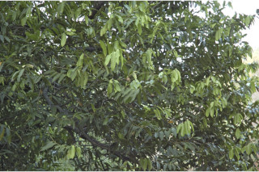
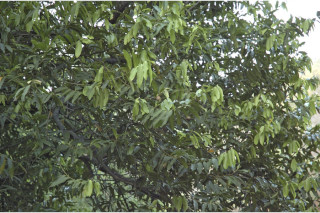
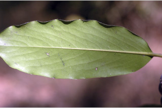
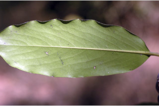
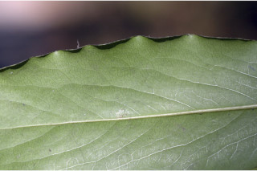
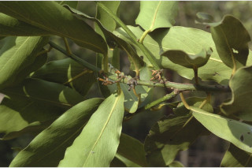
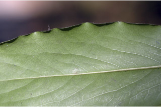
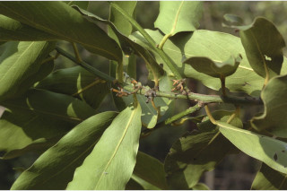

Trees up to 12 m tall.
12 ಮೀ. ಎತ್ತರದವರೆಗೆ ಬೆಳೆಯುವ ಮರಗಳು.
12 മീറ്റര് വരെ ഉയരത്തില് വളരുന്ന മരങ്ങള്.
மரம், 12 மீ. உயரம் வரை வளரக்கூடியது
Bark greyish black, flaky; blaze dull red.
ತೊಗಟೆ ಬೂದು ಮಿಶ್ರಿತ ಕಪ್ಪು ಬಣ್ಣದಲ್ಲಿದ್ದು, ಚಕ್ಕೆ ರೂಪದಲ್ಲಿರುತ್ತದೆ; ಕಚ್ಚು ಮಾಡಿದ ಜಾಗ ಮಬ್ಬಾದ ಕೆಂಪು ಬಣ್ಣದಲ್ಲಿರುತ್ತದೆ.
അടര്ന്നിളകിപ്പോകുന്ന, നരച്ച കറുത്ത നിറത്തിലുള്ള പുറം തൊലി; വെട്ടുപാടിന് മുഷിഞ്ഞ ചുവപ്പുനിറം.
மரத்தின் பட்டை பழுப்பு கலந்த கருப்பு நிறமுடையது, வெடிப்புகளுடையது, பட்டையின் உட்புறம் சிவப்பு நிறமுடையது.
Young branchlets terete to slightly angular, glabrous.
ಎಳೆಯ ಕಿರುಕೊಂಬೆಗಳು ರೋಮರಹಿತವಾಗಿದ್ದು ಆಕಾರದಲ್ಲಿ ದುಂಡಾಗಿರುವುದರಿಂದ ಹಿಡಿದು ಸ್ವಲ್ಪ ಮಟ್ಟಿಗೆ ಕೋನಯುಕ್ತವಾಗಿರುತ್ತವೆ.
അരോമിലമായ, ഇളംശാഖകള് ഉരുണ്ടതു മുതല് ചെറുതായി കോണാകാരത്തിലോ ആണ്.
புதிய சிறிய நுனிக்கிளைகள் குறுக்குவெட்டுத் தோற்றத்தில் வளையமானது முதல் சிறிதளவு கோண வடிவமுடையது, உரோமங்களற்றது.
Leaves simple, alternate, distichous; petiole up to 1.5 cm long, canaliculate, glabrous; lamina 19 x 6.5 cm, oblong-lanceolate, apex acute to obtuse, base acute to attenuate, margin entire, coriaceous, glabrous, strongly reticulate on both surfaces; midrib canaliculate; secondary_nerves ca. 8 pairs.
ಎಲೆಗಳು ಸರಳವಾಗಿದ್ದು ಪರ್ಯಾಯ ಹಾಗೂ ಸುತ್ತು ಜೋಡನಾ ವ್ಯವಸ್ಥೆ ಯಲ್ಲಿದ್ದು ಕಾಂಡದ ಎರಡೂ ಕಡೆಯ ಎದುರು ಬದರಿನ ಸಾಲಿನಲ್ಲಿರುತ್ತವೆ; ಎಲೆ ತೊಟ್ಟುಗಳು 1.5 ಸೆಂಮೀ.ವರೆಗಿನ ಉದ್ದವಿದ್ದು, ಕಾಲುವೆಗೆರೆ ಸಮೇತವಿದ್ದು ರೋಮರಹಿತವಾಗಿರುತ್ತವೆ; ಪತ್ರಗಳು 19 X 6.5 ಸೆಂ.ಮೀ. ಗಾತ್ರ, ಚತುರಸ್ರ- ಭರ್ಜಿಯ ಆಕಾರ ಹೊಂದಿದ್ದು, ಚೂಪಾದುದರಿಂದ ಹಿಡಿದು ಒಳಬಾಗಿದ ತುದಿ; ಚೂಪಾದುದರಿಂದ ಹಿಡಿದು ಚೂಪಲ್ಲದ ಬುಡ, ನಯವಾದ ಅಂಚು, ತೊಗಲವನ್ನೋಲುವ ಮೇಲ್ಮೈ ಹೊಂದಿದ್ದು ರೋಮರಹಿತವಾಗಿರುತ್ತವೆ;ಎಲೆಗಳ ಎರಡೂ ಬದಿಯಲ್ಲಿ ದೃಢವಾದ ಜಾಲಬಂಧ ವಿನ್ಯಾಸದ ನಾಳಗಳಿರುತ್ತವೆ;ಮಧ್ಯನಾಳ ಪತ್ರದ ಮೇಲ್ಭಾಗದಲ್ಲಿ ಉಬ್ಬಿರುತ್ತದೆ ; ಎರಡನೇ ದರ್ಜೆಯ ನಾಳಗಳು ಅಂದಾಜು 8 ಜೋಡಿಗಳಿರುತ್ತವೆ.
ലഘുവായ ഇലകള്, ഏകാന്തരമായി, തണ്ടിന്റെ രണ്ടു ഭാഗത്ത് മാത്രമായടുക്കിയതാണ്; അരോമിലമായതും ചാലോട് കൂടിയതുമായ ഇലഞെട്ടിന് 1.5 സെ.മീ. വരെ നീളം; പത്രഫലകത്തിന് 19 സെ.മീ. നീളവും 6.5 സെ.മീ. വീതിയും, ആയത കുന്താകൃതിയുമാണ്, പത്രാഗ്രം നിശിതം തൊട്ട് ഉപകോണാകാരം വരെയാകാം, പത്രാധാരം നിശിതം തൊട്ട് നീണ്ടുനേര്ത്തവസാനിക്കുന്ന വിധത്തിലോ ആവാം, അരികുകള് അവിഭാജിതമാണ്, ചര്മ്മില പ്രകൃതം, അരോമിലം, ഇരുഭാഗത്തും കനത്തില് ജാലിതമാണ്; മുഖ്യസിര ചാലോട് കൂടിയതാണ്; ഏതാണ്ട് 8 ജോഡി ദ്വിതീയ ഞരമ്പുകള്.
இலைகள் தனித்தவை, மாற்றுஅடுக்கமானவை, இருநெடுக்கு வரிசையிலையடுக்கம் (டைஸ்டிக்கஸ்); இலைக்காம்பு 1.5 செ.மீ. வரை நீளமானது, குறுக்குவெட்டுத் தோற்றத்தில் கேனாலிகுலேட், உரோமங்களற்றது; இலை அலகு 19 X 6.5 செ.மீ., நீள்சதுரம்-ஈட்டி வடிவமுடையது, அலகின் நுனி கூரியது முதல் மழுங்கியது, அலகின் தளம் கூரியது முதல் அட்டனுவேட், அலகின் விளிம்பு முழுமையானது, கோரியேசியஸ், உரோமங்களற்றது; இருபரப்பிலும் தெளிவான வலைப்பின்னல் கொண்டது; மையநரம்பு மேற்பரப்பில் அலகின் பரப்பைவிட பள்ளமானது; இரண்டாம் நிலை நரம்புகள் 8 ஜோடிகள்;
Flowers unisexual, dioecious; male inflorescence 3-7 flowered axillary cymes; female flowers solitary, axillary.
ಹೂಗಳು ಏಕ ಲಿಂಗಿಗಳಾಗಿರುತ್ತವೆ; ಗಂಡು ಹೂಗಳು ಅಕ್ಷಾಕಂಕುಳಿನಲ್ಲಿನ 3 ರಿಂದ 7 ಹೂಗಳನ್ನೊಳಗೊಂಡ ಮಧ್ಯಾರಂಭಿ ಪುಷ್ಪಮಂಜರಿಯಲ್ಲಿರುತ್ತವೆ; ಹೆಣ್ಣು ಹೂಗಳು ಅಕ್ಷಾಕಂಕುಳಿನಲ್ಲಿ ಒಂಟಿಯಾಗಿರುತ್ತವೆ.
പൂക്കള് ഏകലിംഗികളാണ്, ഡയീഷ്യസും; ആണ് പൂങ്കുലകള് 3 മുതല് 7 വരെ പൂക്കളുള്ള കക്ഷീയ സൈമുകളാണ്, പെണ് പൂക്കള് കക്ഷങ്ങളില് ഒറ്റയായുണ്ടാകുന്നു.
ஓர்பால் மலர்கள், ஈரகம் கொண்டவை; ஆண்மஞ்சரி 3-7 மலர்கள் கொண்டவை, இலைக்கோணங்களில் காணப்படும் சைம்; பெண்மலர்கள் தனித்தவை, இலைக்கோணங்களில் காணப்படும்.
Berry, globose, 4 cm across, reddish velvety, fruiting_calyx large, reflexed; seeds 4-8, smooth, pulp viscid, turning black when exposed.
ಬೆರ್ರಿಗಳು ಗೋಳಾಕಾರದಲ್ಲಿದ್ದು 4 ಸೆಂ. ಮೀ. ಅಡ್ಡಗಲದಳತೆಯನ್ನು ಹೊಂದಿರುತ್ತವೆ ಹಾಗೂ ಕೆಂಪು ಮಖಮಲ್ಲಿನ ಸಮೇತವಿರುತ್ತವೆ; ಕಾಯಿಗಳ ಪುಷ್ಪಪಾತ್ರೆ ದೊಡ್ಡದ್ದಾಗಿದ್ದು ಹಿಂಚಾಚಿಕೊಂಡಿರುತ್ತದೆ; ಬೀಜಗಳು 4 ರಿಂದ 8 ಇದ್ದು ನಯವಾಗಿರುತ್ತವೆ;ಬೀಜಗಳ ತಿರುಳು ಜಿಗುಟಾಗಿರುತ್ತದೆ ಹಾಗೂ ಹೊರವಾತಾವರಣಕ್ಕೆ ಒಡ್ಡಿದಾಗ ಕಪ್ಪಾಗುತ್ತದೆ.
4 മുതല് 8 വരെ, മിനുസമുള്ള വിത്തുകളുള്ള, കായ, ചുവപ്പ് വെല്വെറ്റ് രോമങ്ങള് നിറഞ്ഞ, 4 സെ.മീ. കുറുകേയുള്ള, ഗോളാകാരബെറിയാണ്, കായോട് ചേര്ന്നു നില്ക്കുന്ന ബാഹ്യദളങ്ങള് വലുതും പിന്നാക്കം വളഞ്ഞതുമാണ്, കായ്ക്കകത്തെ മജ്ജ കൊഴുത്തതും, പുറത്തു വരുമ്പോള് കറ
முழுச்சதைகனி (பெர்ரி), உருண்டையானது, 4 செ.மீ. குறுக்களவுடையது, சிவப்பு நிறமான மெண்மையான உரோமங்களுடையது (வெல்வெட்), பழத்தின் புல்லி இதழ்கள் பெரியது, வளைந்தது; விதைகள் 4-8 வழுவழுப்பானது, கனியின் சதை பிசுபிசுப்பானது, சதை வெளிவந்தவுடன் கருப்பு நிறத்திற்கு மாற
 



 


 


